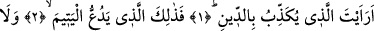
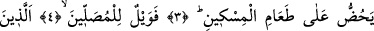
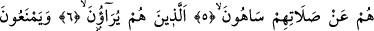
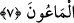
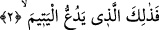

DİNİ YALANLAYANI
GÖRDÜN MÜ?
Bismillâhirrahmânirrahîm
1. Dini yalanlayanı gördün mü?
2. İşte o, yetimi itip kakar;
3. Yoksulu doyurmaya teşvik etmez;
4. Yazıklar olsun o namaz kılanlara ki,
5. Onlar namazlarını ciddiye almazlar.
6. Onlar gösteriş yapanlardır;
7. Hayra da mâni olurlar.
Ey Muhammed (s.a.)! “Dini” cezâyı ve İslâm’ı “yalanlayanı gördün mü?” Yâni
tanıdın mı? Ceza gününü yalanlayan veya İslâm dinine îmân etmeyen kimseyi gördün
mü, ya da bildin mi? Eğer tanımadıysan ve bilmek istersen,
2. İşte o, yetimi itip kakar;
O yetimi şiddetle iten, kötü bir şekilde azarlayandır.
Müfessirlerin ifâdesine göre bunu yapan Ebû Cehil’dir. O bir yetîmin vasîsi idi.
Birgün o yetîm çırılçıplak gelerek kendine âid malından istedi. Ebû Cehil onu çok
çirkin bir şekilde geri çevirdi. Çocuk bunun üzerine ümidsizliğe düştü. Kureyş’in ileri
gelenleri: “Muhammed’e söyle, sana şefaatçı olsun” dediler. Aslında maksadları
Peygamber Efendimiz (s.a.) ile alay etmekti. Çünkü Efendimiz (s.a.) hiç bir muhtâcı geri
çevirmezdi. Peygamber Efendimiz (s.a.) çocukla birlikte Ebû Cehil’e gitti. Ebû Cehil
ayağa kalkarak, yetîme malını fazlasıyla verdi. Bunun üzerine Kureyşliler Ebû Cehil’i